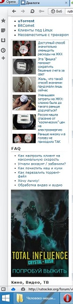

Юзабилити
В данном разделе будет предпринята попытка рассмотреть сайт rutracker.org на предмет юзабилити.
Юзабилити — это научно-прикладная дисциплина,занимающаяся повышением
эффективности,продуктивности и удобства пользования инструментами
деятельности. От эргономики юзабилити отличает заинтересованность в
эффективности работы пользователя (потребителя), а не человеко-машинной
системы в целом.
rutracker.org
1.1 Открыв сайт первым делом бросается в глаза яркий и крупный логотип, основная задача которого, судя по всему, зарезервировать место под огромный банер справа от него.
1.2 Правая и левая колонка, как и вся стартовая страница, изобилует ссылками, по большей части дублирующийся, сгенерированными для привлечения внимания к массивам контекстных баннеров, содержащимся под ними.
|  |
1.3 Банеры контекстной рекламы также интегрированы во все элементы навигации сайта.
1.4 Благодаря огромному количеству ссылок на главной странице, горизонтальная прокрутка её занимает несколько экранов, что не способствует удобному поиску информации посетителем.
1.5 Нижняя часть сайта наградит посетителя просмотром горизонтального блока баннеров.
1.6 Итоги
Данный сайт монетизирован продажей контекстной рекламы. В погоне за увеличением баннерной площади главной страницы авторы увлеклись и растянули её на несколько экранов. Оправданием этому они использовали классический форумный интерфейс с большим количеством ссылок. На лицо типичная ситуация для сайтов с полулегальным содержание.
1.7 Рекомендации
Разработчикам сайта можно рекомендовать побороть в себе жадность и уменьшить количество рекламы, после чего отпадёт необходимость в огромной количестве мусорных ссылок в навигации сайта. Пользователям, однозначно, можно рекомендовать использовать расширение для используемого ими браузера Adblock и аналогичные ему. Также можно не пользоваться сайтами с сомнительным содержанием.